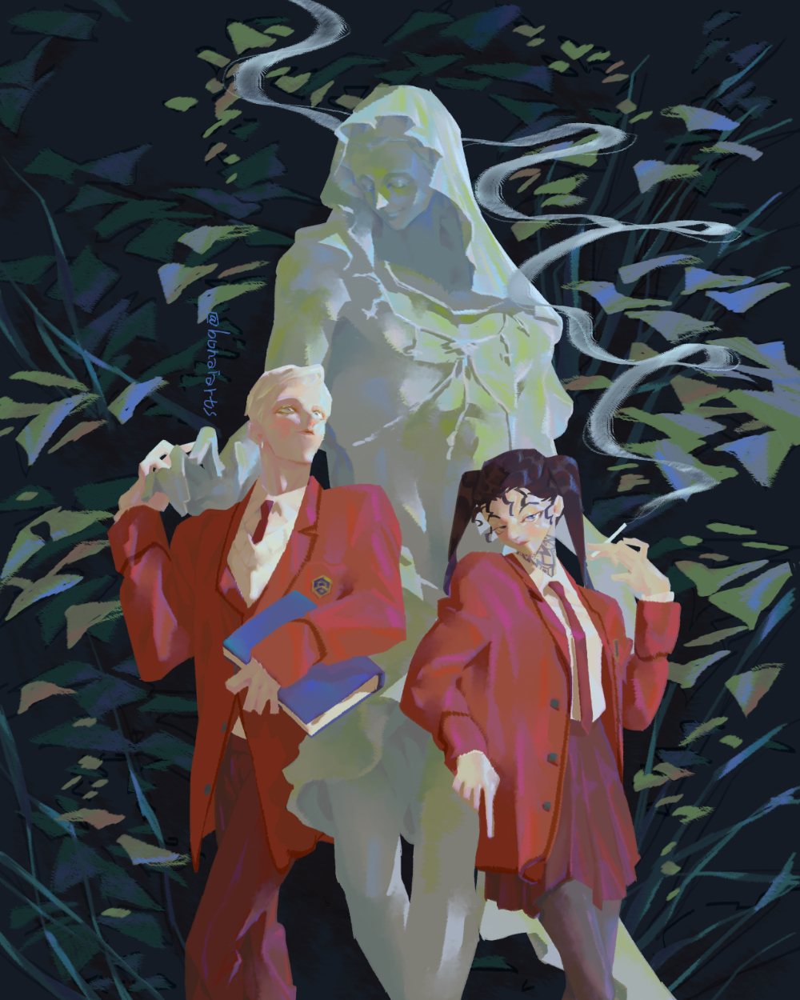
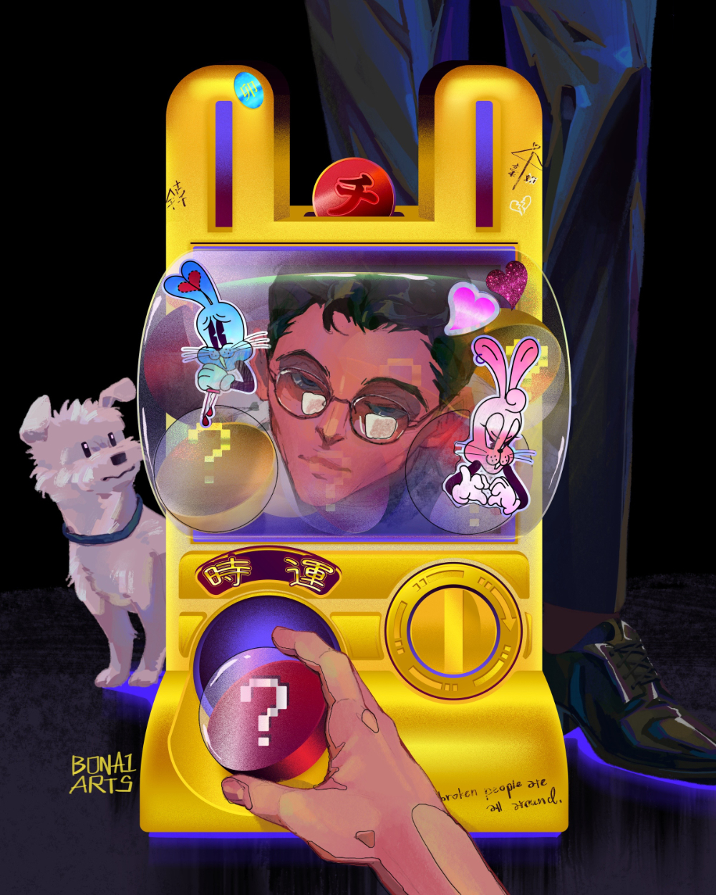
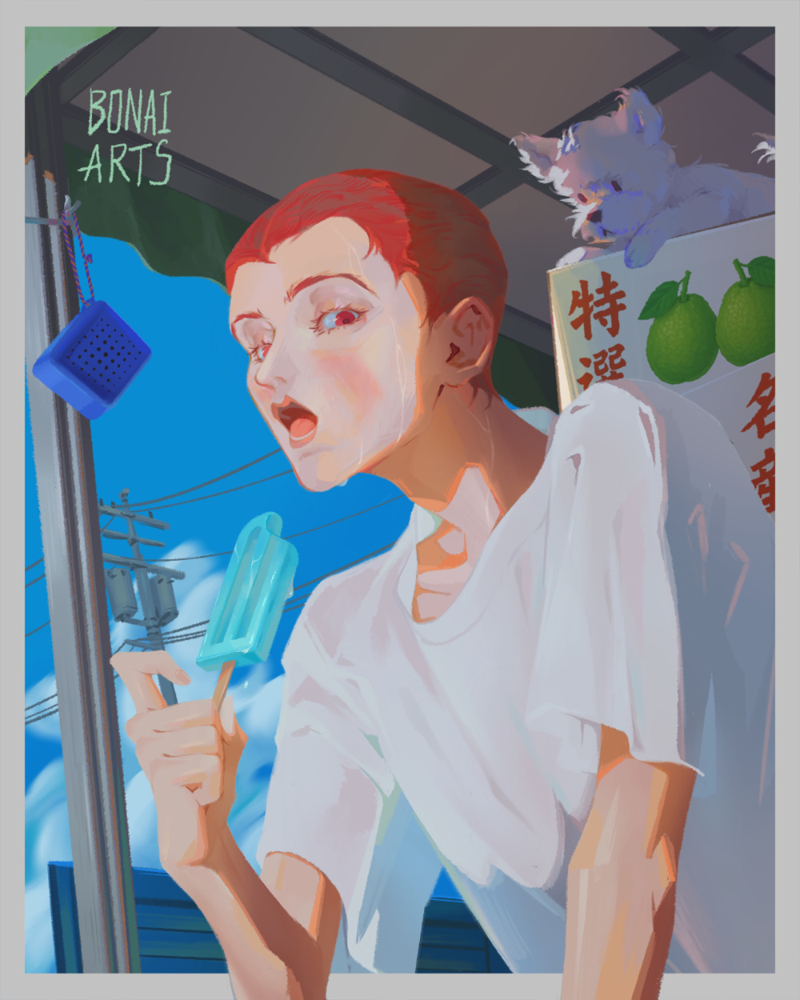
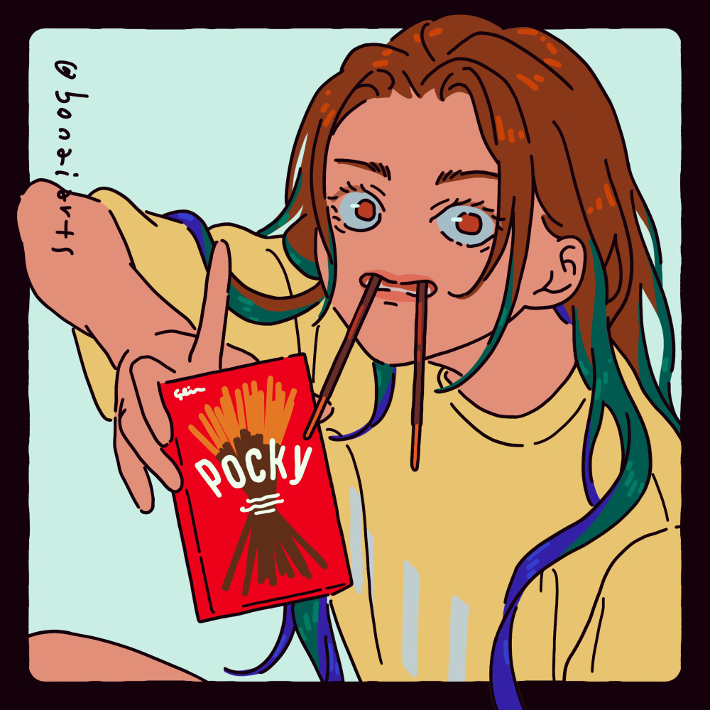
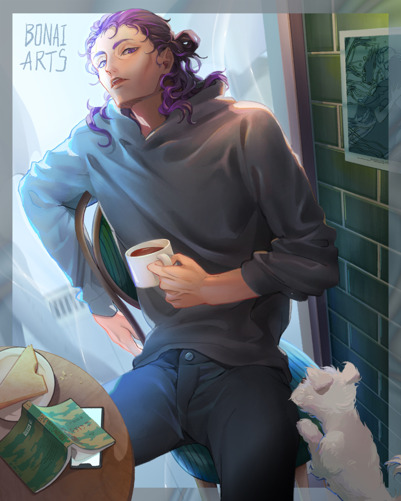
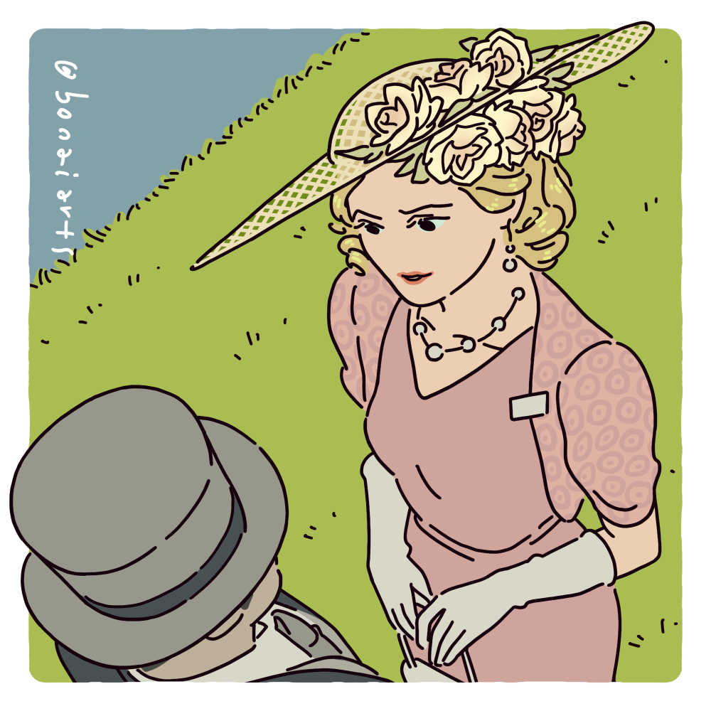
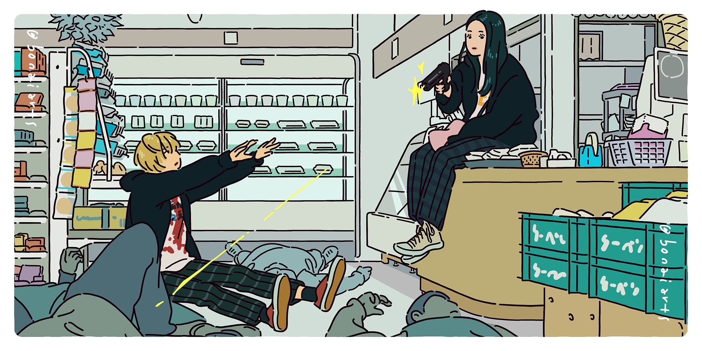
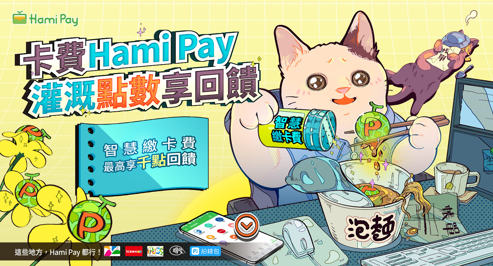
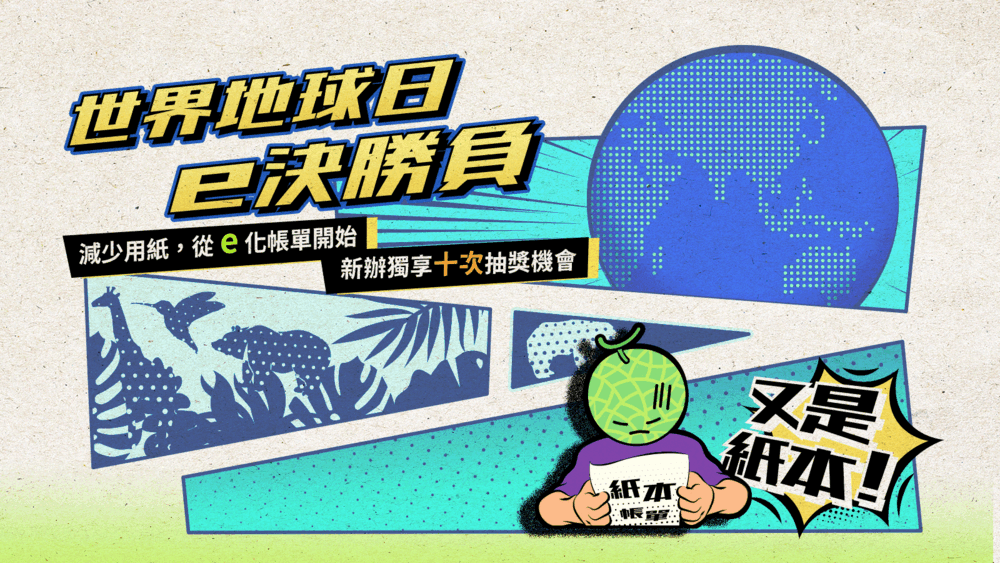

插畫作品
Illustration從標誌到完整視覺系統，替品牌建立一致且好記的樣貌。

山嵐咖啡 品牌形象
以山稜線為意象的圖形標誌，延伸至杯套、菜單與招牌。

潮間帶 書店識別
波浪與書頁堆疊的雙關標誌，配色取自海岸黃昏。

微光 診所 CI
柔和的圓形系統傳達安心感，字體選用圓體無襯線。

拾光 手作市集
可自由組合的圖形模組，每季更換主色。

雲端 共享工作室
以疊加的方塊象徵共享空間，單色即可辨識。

暖爐 麵包坊
手繪火光與麥穗結合，包材延伸統一語彙。
暖爐 麵包坊
手繪火光與麥穗結合，包材延伸統一語彙。
點擊看說明
扁平插畫
Flat Illustration用色彩、構圖與字體，讓活動與展覽在一眼之間被記住。

城市呼吸 展覽海報
大面積色塊與疊印效果，呈現都市節奏。

夏夜爵士 音樂節
放射狀線條與手寫字，營造即興律動。

無聲 影展主視覺
大量留白搭配單一焦點，強調靜默張力。

Typo Night 講座
以巨大字母作為視覺主體，疊加半透明圖層。

綠島 環保行動
螢光綠與黑的強對比，訴求直接有力。

午後 劇場
柔焦漸層搭配細字，呈現戲劇前的靜謐。
點擊看說明
書籍編排
Editorial書籍與刊物的版面設計，讓閱讀節奏流暢而有層次。

《島嶼筆記》攝影集
九宮格版面搭配細線註解，節奏如旅行日誌。

《食物的地圖》雜誌
欄位彈性切換，圖文穿插形成閱讀節奏。

《寂靜之聲》詩集
極簡版面，字距與行距呈現詩的呼吸。

年度報告 2025
資料視覺化結合插圖，讓數字更易讀。

《老街》口述歷史
老照片與訪談並置，紙張選用微黃道林。
獨立刊物《隙》
跨頁大圖與小字註腳，刻意留下不對稱。

獨立刊物《隙》
跨頁大圖與小字註腳，刻意留下不對稱。

獨立刊物《隙》
跨頁大圖與小字註腳，刻意留下不對稱。
點擊看說明
包裝設計
Packaging結構、材質與圖形並重，讓產品在架上自己說話。
晨露 茶葉禮盒
三款茶種以三色區分，內襯採用壓紋紙。
野火 辣椒醬
火焰剪影圖形與強烈對比色，吸睛上架。
海鹽 手工皂
天然牛皮紙搭配單色印刷，環保又質樸。
小森 兒童餅乾
可拆解的動物盒型，吃完還能玩。
夜航 精釀啤酒
深色瓶身搭配星圖，每款一個星座。
蜜時 蜂蜜禮組
六角形結構盒，開啟後如蜂巢展開。
點擊看說明
字體設計
Typography從字型實驗到標準字，探索文字本身的造型與個性。
「潮」 字體實驗
以水波筆劃重構漢字，保留可讀性。
「光」 標準字
幾何切割筆劃，呈現光線折射。
Aa Grotesk 拉丁字體
中性無襯線字族，共三個字重。
「靜」 書法再詮釋
傳統筆意結合現代幾何骨架。
「山」 圖像字
把山形融入筆劃，字即是景。
Serif Tide 襯線體
襯線帶有手刻的不規則感，適合長文。
點擊看說明
字體設計
Typography從字型實驗到標準字，探索文字本身的造型與個性。
「潮」 字體實驗
以水波筆劃重構漢字，保留可讀性。
「光」 標準字
幾何切割筆劃，呈現光線折射。
Aa Grotesk 拉丁字體
中性無襯線字族，共三個字重。
「靜」 書法再詮釋
傳統筆意結合現代幾何骨架。
「山」 圖像字
把山形融入筆劃，字即是景。
Serif Tide 襯線體
襯線帶有手刻的不規則感，適合長文。
點擊看說明